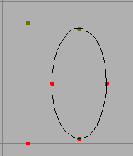
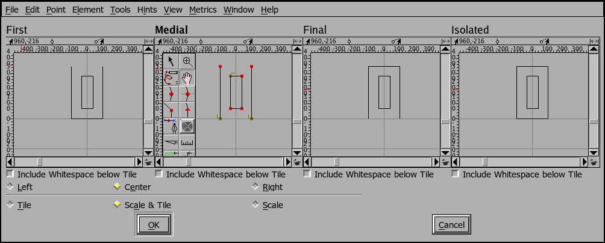
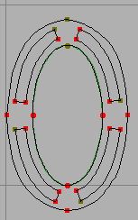
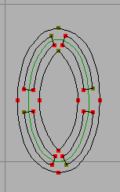
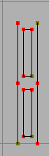

Tile Path
The Tile Path command may be used to apply a repetative decoration to a font. You invoke the command on a glyph (or set of glyphs), then design your tile(s). All selected paths in the glyph will be replaced by the tile fit to the curve.
Consider the following:
 The tile |
 Two paths to be tiled. |
 The result. |
The tile has been replicated (and warped) to follow the original contours.

As you can see above there are several different tiles you can specify. You
must specify the tile called Medial; you may specify the other three. There
meanings are:
- If you have an open contour and a single tile will cover it, then the "Isolated" tile will be used
- Otherwise, if you have an open contour, then the first tile laid down will be the "First" tile, the last tile laid will be the "Final" tile, and any intermediate tiles will be the medial tiles.
- Closed contours will always be covered by "Medial" tiles.
The reasoning behind this is that you may want special edge effects. In the example above it would be nice if the ends of open contours were automatically closed, so the first and final tiles might look just like the medial tile except with their respective edges closed, while the isolated tile would have both edges closed.

The Tile Path dialog gives you several choices to control how the tile is placed. The tile can be either centered on the path, or be tangent to the left edge of the path (for a clockwise path, the left edge is outside the path), or be tangent to the right edge (for a clockwise path the right edge is inside the path).
|  left (outside) |
 center |
 right (inside) |
You can also chose whether you want the tile to be tiled without scaling (in which case you will probably be left with a fraction of the tile at one end), tiled with scaling (the tile will be scaled so that it fits on the path an integral number of times), or simply scaled (in which case there will be exactly one tile and it will be scaled to be as long as the path.
 tile |
 tile & scale |
 scale |
Tile Pattern
 The Tile
Pattern dialog allows you to design a pattern which will be tiled (both
horizontally and vertically across the current layer.
The Tile
Pattern dialog allows you to design a pattern which will be tiled (both
horizontally and vertically across the current layer.
You design the pattern in the edit pane of the dialog, and specify, the size of the tile using the width and height fields -- note that the size may be larger than the pattern's bounding box if you want white space around the tile (the green lines show the bounds of the tile). You also specify how many times the pattern is to be repeated in the x and y directions.
The tiling will start at the origin. After the pattern has been tiled you may apply other transformations to distort it into a non-rectangular shape, or use the Element->Overlap->Intersect command to clip it to some contour. Thus you can simulate some of the capabilities of a true pattern tile as is available in a type3 font.